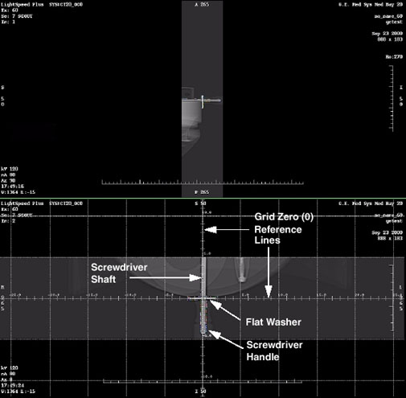

| NOTE: | Both scout should now be displayed. Adjust the window and level setting so you can see the outline of the screwdriver handle. Click in a viewport to activate it, and select Grid. |
The washer and screwdriver shaft need to be centered under the zero (0) grid lines. Both washer and screwdriver should also be parallel to the associated grid lines. See Illustration 2.
Illustration 2: Aligning the Laser Adjustment Jig to ISO Center and the Z-Axis
